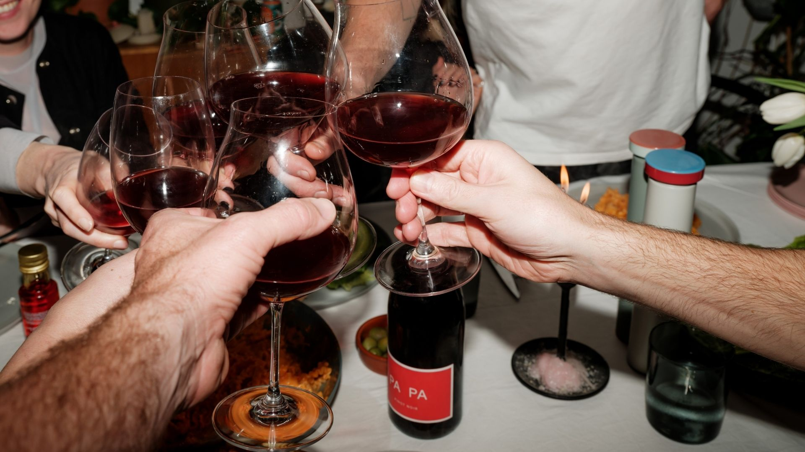
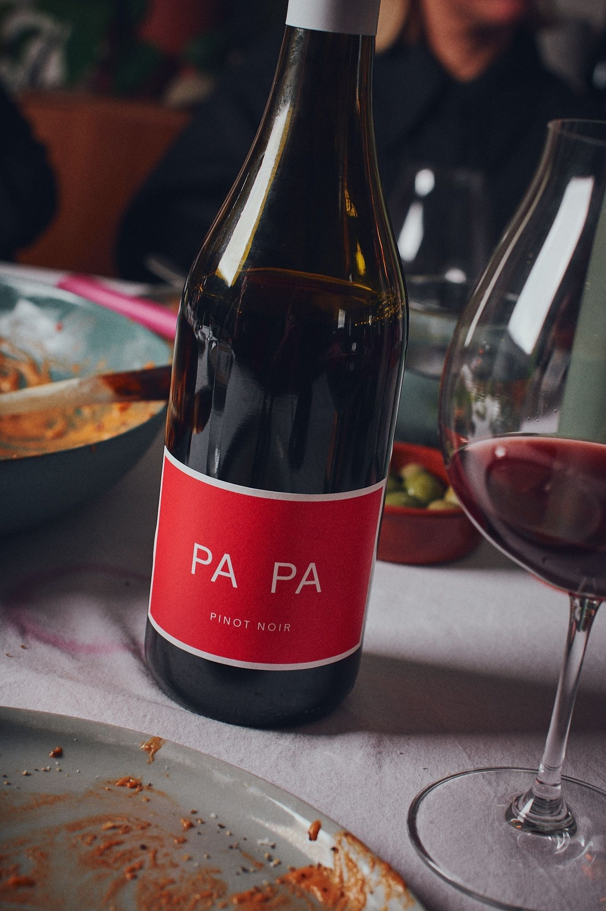

Who’s PA PA?
We’ve all known one.
The spirit behind PA PA
Maybe it was someone in your family. Maybe it was a friend.
Maybe it was simply the person who made every table a little better to be around. They appreciated good food. They knew a good bottle. They always had another story to tell, another laugh to share, and somehow everyone felt welcome.
That spirit inspired PA PA.
PA PA is the bottle that’s there for the stories, the laughter and the memories. Beautifully made, easy to enjoy, and always one you’re happy to open.

More than what’s in the bottle
A simple “yum.”
Another glass.
Another story.
We don’t believe the best wines are the ones people spend all night talking about. They’re the ones people happily keep pouring while the conversation carries on.
Because if everyone’s busy analysing the wine, they’re probably missing the moment. PA PA was never created to steal the occasion. It was created to become part of it.

Consistency and trust
One you’ll always be happy to open.
Some bottles are bought to impress. Others are saved for a special occasion. PA PA was made to be enjoyed.
The bottle you reach for without hesitation. The one you’re proud to pour. The one your friends are always happy to see on the table.
Because when you know it’s going to be good, you stop thinking about the wine and start enjoying the people you’re with.
Life around the table
Some evenings are planned.
Others somehow happen.
That’s PA PA